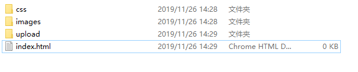

rem布局原文出处:本文由博客园博主小咸鱼|大梦想提供。
原文连接:https://www.cnblogs.com/SSPOFA/p/11937178.html
rem布局
技术选型
方案：采取单独制作移动页面方案
技术：布局采取rem适配布局（less-rem+媒体查询）
设计图纸：750px尺寸
相关文件夹结构

设置视口标签以及引入初始化央视
<meta name="viewport" content="width=device-width, initial-scale=1.0,
user-scalable=no,maximun-scale=1.0,minimum-scale=1.0">
<meta http-equiv="X-UA-Compatible" content="ie=edge">
<link rel="stylesheet" href="css/normalize.css">
设置公共的common.less文件
- 设置好最常见的屏幕尺寸，利用媒体查询设置不同的html字体大小，因为除了首页其他页面也需要
- 常用尺寸：320px\360px\375px\384px\400px\414px\424px\480px\540px\720px\750px
- 划分的分数我们定位15等分
- html字体大小为50px，写在最上面
方案1
方案2
- flexible.js
- 手机淘宝团队出的简洁高效的移动端适配库
- 不在需要些不同屏幕的媒体查询
- 原理是把当前设备划分为10等分，但是不同设备下，比例还是一致的
- 我们要做的，就是确定好我们当前设备的html文字大小就可以了
- 比如当前设计稿是750px，那么我们只需要把html文字大小设置为75px（750px / 10）就可以了
- 里面页面元素rem值：页面元素的px值/75
- 剩下的flexible.js去算
- github地址：http://github.com/amfe/lib-flexible
- rem